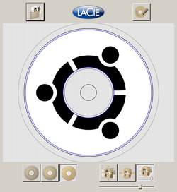
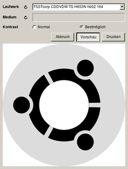
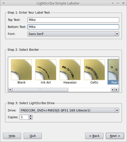

LightScribe
Dieser Artikel wurde für die folgenden Ubuntu-Versionen getestet:
Ubuntu 16.04 Xenial Xerus
Ubuntu 14.04 Trusty Tahr
Zum Verständnis dieses Artikels sind folgende Seiten hilfreich:
LightScribe ist eine von den Firmen Hewlett-Packard (HP) und Lite-On entwickelte Technologie zum Beschriften spezieller CD- oder DVD-Rohlinge. Um die Technologie nutzen zu können, wird außerdem ein LightScribe-fähiges optisches Laufwerk als Brenner benötigt. Während die Unterseite des Rohlings wie gewohnt mit Daten beschrieben wird, kann danach der Rohling umgedreht in das Laufwerk gelegt werden, um seine Oberseite zu beschriften.
Die Oberfläche eines LightScribe-Rohlings ist mit einer speziellen goldenen Farbe überzogen, die auf die Hitze des Lasers reagiert. Das Ergebnis ist ein monochromes Bild, welches in konzentrischen Kreisen in die Oberfläche gebrannt wird. Alle Rohlinge sind zusätzlich mit einem Barcode ausgestattet, der vom Brenner gelesen werden kann und somit gewährleistet, dass der Rohling immer die gleiche Ausgangsposition im Laufwerk hat. Dadurch lässt sich das Motiv beliebig "überbrennen" – aber so, wie es der Benutzer plant. Besonders nützlich ist dies, um Bilder oder Text auf unbeschriftete Flächen hinzuzufügen oder um den Kontrast zu verstärken (das Ergebnis ist nämlich eher grau als schwarz).
Hinweis:
Bevor man sich den verschiedenen Anleitungen in diesem Artikel widmet, sollte man folgendes berücksichtigen:
LightScribe ist eine Technik von gestern – die in diesem Artikel beschriebenen Treiber und Programme stammen aus dem Jahr 2006
Die offizielle Seite http://www.lightscribe.com/ hat Anfang 2013 den Betrieb eingestellt. Das bedeutet, dass alle der hier genannten Dateien aus ungeprüften Fremdquellen stammen!
64-bit-Systeme werden nur sehr eingeschränkt oder auch gar nicht unterstützt. Dies betrifft insbesondere die Programme zur praktischen Nutzung.
Installation¶
 Die Installation gliedert sich grundsätzlich in zwei Teile:
Die Installation gliedert sich grundsätzlich in zwei Teile:
LightScribe Basis-Installation
Installation eines Programms zur Nutzung von LightScribe (es stehen mehrere zur Auswahl)
Vorbereitung¶
Bevor die Basis-Installation erfolgt, muss zuerst eine Gruppe wheel angelegt und die Benutzer, die später in der Lage sein sollen, CDs zu bedrucken, hinzugefügt werden [1]. Ansonsten ist die Nutzung der im weiteren Verlauf genannten Programme nicht möglich!
sudo addgroup wheel sudo adduser BENUTZERNAME wheel newgrp
BENUTZERNAME ist dabei durch den eigenen Benutzernamen zu ersetzen.
Basis-Installation¶
Für die Benutzung eines LightScribe-Laufwerks müssen zuerst bestimmte Bibliotheken (auch als "LightScribe System Software" oder "LightScribe Host Software" bezeichnet) heruntergeladen und manuell installiert werden [2]. Da die ursprüngliche Seite nicht mehr verfügbar ist und außerdem nur RPM-Pakete bereitstellte, die erst in die von Ubuntu benötigten DEB-Pakete umgewandelt werden mussten, wird ein Fremdpaket von pawtec.com  genutzt:
genutzt:
Dieses wird nun installiert:
32-Bit:
sudo dpkg -i lightscribe-1.18.27.10-linux-2.6-intel.deb
64-Bit: Wer diese Systemarchitektur einsetzt, muss tricksen, da die Basisinstallation nur 32-bit-Bibliotheken installiert. Darüber hinaus ist das Paket ia32-libs inzwischen nur noch für Ubuntu 12.04 in den offiziellen Paketquellen enthalten:
sudo apt-get install ia32-libs sudo dpkg -i --force-architecture lightscribe-1.18.27.10-linux-2.6-intel.deb sudo ln -s /usr/lib/liblightscribe.so.1 /usr/lib32/ sudo ln -s /usr/lib/liblightscribe.so /usr/lib32/ sudo ldconfig
Hinweis!
Fremdpakete können das System gefährden.
Sollte der Befehl dpkg unerfüllte Abhängigkeiten melden, können diese mit:
sudo apt-get install -f
installiert werden (sofern entsprechende Pakete noch in den offiziellen Paketquellen enthalten sind). Diese Vorgehensweise ist auch im weiteren Verlauf des Artikels anzuwenden. Sollte die Reparatur fehlschlagen, sind weitere Installationsversuche sinnlos.
Sollte das Laufwerk nach der Basis-Installation auf einem 64bit System nicht erkannt werden, könnte es helfen, die Datei /usr/lib/i386-linux-gnu/libstdc++.so.5 zu entfernen (zur Sicherheit ein Backup der Datei anlegen!) und einen symbolischen Link auf die '/usr/lib/lightscribe/libstdc++.so.5.0.7 zu setzen (siehe https://mytec-blog.de/computer/linux-desktop/29-kubuntu-13-04-erkennt-kein-lightscribe-laufwerk  ):
):
sudo rm /usr/lib/i386-linux-gnu/libstdc++.so.5 sudo ln -s /usr/lib/lightscribe/libstdc++.so.5.0.7 /usr/lib/i386-linux-gnu/libstdc++.so.5
Programme¶
Lange Zeit war es für Linux-Benutzer nicht möglich, ihren LightScribe-fähigen Brenner zu benutzen. HP hatte die Technologie an ausgewählte Software-Firmen unterlizensiert, die offensichtlich wenig daran interessiert waren, ihre LightScribe-fähige Brennsoftware für Linux-Systeme bereitzustellen.
Die einzige Ausnahme stellte der Hardware-Hersteller LaCie dar, der seine Lizenz dafür genutzt hat, um ein kostenloses Programm für Linux zu veröffentlichen. Derzeit gibt es drei grafische Programme, mit denen LightScribe genutzt werden kann (das vierte verwendet 4L):
LaCie LightScribe Labeler für Linux (4L) - Grafiken komfortabel drucken. Kostenlos, aber keine freie Software (nur 32-bit).
Simple Labeler - wie der Name schon sagt, ein äußerst einfach gestricktes Programm. Nur für Beschriftungen (Text). Wurde gleichzeitig mit der "LightScribe System Software" angeboten (nur 32-bit).
Qt lightScribe (qlscribe) - eine Open-Source-Alternative zu 4L und auch als 64-Bit-Version verfügbar. Kann Grafiken und Text gleichzeitig drucken.
DiscWrapper - ein Programm zum Erstellen von Einlagen für CD- und DVD-Hüllen. Zum Drucken kann auf 4L zurückgegriffen werden.
4L¶
Das Kürzel 4L steht für den LaCie LightScribe Labeler für Linux . Da dieser auch als Kommandozeilenversion vorliegt, kann er in andere Programme eingebunden werden. Der Quelltext ist allerdings Closed Source und steht damit nicht zur Verfügung.
Auf der Herstellerseite  wird nur ein RPM-Paket angeboten, das wiederum zuerst mittels alien [3] in ein DEB-Paket umgewandelt werden müsste. Daher wird auch an dieser Stelle auf ein bereits konvertiertes Fremdpaket von yardbird.net ausgewichen. Das folgende 32-bit-Paket muss heruntergeladen und manuell installiert werden:
wird nur ein RPM-Paket angeboten, das wiederum zuerst mittels alien [3] in ein DEB-Paket umgewandelt werden müsste. Daher wird auch an dieser Stelle auf ein bereits konvertiertes Fremdpaket von yardbird.net ausgewichen. Das folgende 32-bit-Paket muss heruntergeladen und manuell installiert werden:
Die Installation erfolgt über die Befehle:
32-Bit:
sudo dpkg -i 4l_1.0-r6_i386.deb
64-Bit:
sudo dpkg -i --force-architecture 4l_1.0-r6_i386.deb
Hinweis!
Fremdpakete können das System gefährden.
Unter Ubuntu 16.04 treten hier unerfüllte Abhängigkeiten auf, die das fortführen der Installation verhindern. Mittels apt wird hier Abhilfe geschaffen:
sudo apt install -f
Die Installation von 4l fährt danach von selbst fort.
Verwendung¶
Hinweis:
Um Rohlinge beschreiben zu können, werden Root-Rechte benötigt.
Vor der ersten Benutzung von 4L muss der Computer neu gestartet worden sein. Es gibt zwei Varianten von 4L: eine grafische Oberfläche (GUI) und eine Kommandozeilenversion fürs Terminal. Die grafische Benutzeroberfläche lässt sich über den Befehl:
4L-gui
starten. 
Die Benutzung des Programms ist recht intuitiv und denkbar einfach. Als erstes wählt man eine Grafik aus – unterstützt werden die Bildformate PNG, GIF, JPEG und BMP. Dazu klickt man oben links auf das Ordnersymbol. Es erscheint ein Dialog "Bild importieren" und man kann sich bequem zur gewünschten Datei durchklicken. Über die Schaltflächen unten rechts und einen Schieberegler lässt sich die Grafik dann in der Vorschau auf die Größe des Rohlings anpassen und in die gewünschte Position bringen. Zu guter Letzt kann man sich über die drei Schaltflächen unten links für einen Modus entscheiden, in welcher Weise die CD/DVD beschrieben werden soll:
die gesamte Fläche der Disc beschreiben (rechts)
von der Mitte ausgehend konzentrisch zur Hälfte (Mitte)
nur einen Ring (links)
Der jeweilige Bereich wird durch eine weiße Fläche zwischen zwei blauen Ringen kenntlich gemacht. Hat man alles zu eigenen Zufriedenheit konfiguriert, klickt man auf die Schaltfläche oben rechts und gelangt zum zweiten Menü.
Hier erscheint zunächst der vom Programm erkannte LightScribe-fähige Brenner. Hat man einen Rohling bereits im Laufwerk in Position gebracht, kann dies mit Hilfe eines Klicks auf den Pfeil bei "Medium" überprüft werden. Die Meldung im Feld daneben sollte in etwa der des Screenshots entsprechen: 
Bevor mit dem Beschreiben der Disc begonnen werden kann, hat man vorher noch die Möglichkeit, sich das spätere Ergebnis anzeigen zu lassen. Nachdem man auf "Vorschau" geklickt hat, erscheint eine Grafik in Schwarz/Weiß zur Verdeutlichung, wie das Ergebnis in etwa aussehen wird. Besonders praktisch ist diese "letzte Überprüfung", wenn man nicht die gesamte Disc beschreiben möchte, da hier wirklich alles außerhalb der blauen Ringe abgeschnitten wird.
Hat man sich schlussendlich für eine der beiden Optionen zum Kontrast entschieden, kann der Schreibvorgang mit "Drucken" begonnen werden.
Alternativ zur GUI kann man 4L komplett im Terminal nutzen. Allerdings hat dies, neben der relativ umständlichen Bedienung, den entscheidenden Nachteil, dass ausschließlich BMP-Dateien genutzt werden können. Deshalb verzichtet dieser Artikel auf eine weitere Anleitung und verweist auf das 4L User Manual. Stattdessen werden im Weiteren ein paar allgemein nützliche Befehle aufgeführt, die für alle Benutzer von Interesse sein könnten.
Identifikation des Laufwerks:
4L-cli enumerate
Es werden Informationen zum als geeignet erkannten Laufwerk ausgegeben. Beispiel:
Drive path: /dev/hdd Usable: 1 Full name: HL-DT-ST - DVD-RAM GSA-H20L - 1.00 Model: DVD-RAM GSA-H20L Manufacturer: HL-DT-ST Capabilities: monochrome Drive inner radius: 21000 Drive outer radius: 58700
Am wichtigsten ist hier der Pfad des Laufwerks (
Drive path), da dieser für alle weiteren Befehle gebraucht wird.Usablesagt aus, ob das Laufwerk derzeit benutzt werden kann – falls dem so ist, steht dort eine1, falls nicht eine0. Die Angabe beiCapabilitiesist irrelevant, da die LightScribe-Technologie ausschließlich monochrome Ergebnisse liefert.
Da man spätestens jetzt den Pfad des LightScribe-Brenners kennt, kann man nun - sofern eine CD oder DVD eingelegt wurde - überprüfen, ob das jeweilige Medium als LightScribe-fähig erkannt wird und die Disc korrekt eingelegt wurde:
4L-cli mediainfo /PFAD/ZUM/BRENNER
Beispiel:
Using /etc/lightscribe.rc Media present: 1 Lightscribe media: 1 Oriented for labeling: 1 Shape: disc_12cm Manufacturer ID: 102 Print area inner radius: 23800 Print area outer radius: 58700
Eine
1gibt hier jeweils wieder eine positive Rückmeldung dazu, dass eine CD oder DVD im Laufwerk liegt (Media present), es sich bei dieser auch um einen LightScribe-Rohling handelt (Lightscribe media) und sie korrekt im Laufwerk liegt - nämlich mit der Oberseite nach unten (Oriented for labeling). Erst dann erscheinen die restlichen (weniger wichtigen) Informationen.
Für den unwahrscheinlichen Fall, dass man mehrere LightScribe-fähige Brenner besitzt, hat LaCie eine einfache Möglichkeit bereitgestellt, herauszufinden, hinter welchem Pfad sich welches Laufwerk versteckt:
4L-cli open /PFAD/ZUM/BRENNER
lässt sich die Schublade des Laufwerks bequem über das Terminal öffnen und mit
4L-cli close /PFAD/ZUM/BRENNER
wieder schließen.
Brennen mit Benutzerrechten¶
Achtung!
Bei Anwendung dieses Abschnitts bitte unbedingt den Artikel sudo/Konfiguration zu Rate ziehen.
Möchte man Benutzern ohne Root-Rechte ermöglichen, das Programm zum Brennen zu nutzen, so ist dies problematisch: Das Brennen braucht Root-Rechte. Man kann jedoch einzelnen Benutzern gestatten, 4L bzw. die grafische Variante 4L-gui auszuführen, ohne ein Passwort eingeben zu müssen. Hierzu muss sudo über den Befehl:
sudo visudo
konfiguriert und die folgende Zeilen eingefügt werden:
# User alias specification User_Alias LIGHTSCRIBE = otto, anna, berta # Cmnd alias specification Cmnd_Alias LACIE_4L = /usr/bin/4L-gui # User privilege specification LIGHTSCRIBE ALL = NOPASSWD: LACIE_4L
Mit diesem Beispiel würden die drei Benutzer otto, anna und berta das Programm mit dem Befehl
gksudo 4L-gui
benutzen können, ohne als Administrator angemeldet zu sein. Anschließend kann man sich einen Programmstarter mit dem Befehl gksudo 4L-gui anlegen und diesen als normaler Nutzer aufrufen.

Simple Labeler¶
Das Programm Simple Labeler ist ziemlich selbsterklärend. Im Gegensatz zu 4L kann man mit Simple Labeler keine Bilder auf die Rohlinge drucken, dafür aber umso leichter Beschriftungen erstellen. Es kann auch mit 4L kombiniert werden, z.B. um erst eine Beschriftung und im Anschluss mit 4L ein Hintergrundbild auf den Rohling zu drucken.
Die Installation erfolgt über ein Fremdpaket für 32-bit-Systeme:
Die Installation erfolgt über die Kommandozeile:
32-Bit:
sudo dpkg -i lightscribeApplications-1.18.15.1-linux-2.6-intel.deb
64-Bit:
sudo dpkg -i --force-architecture lightscribeApplications-1.18.15.1-linux-2.6-intel.deb
Hinweis!
Fremdpakete können das System gefährden.
Verwendung¶
Standardmäßig wird das Programm in den Ordner /opt/lightscribeApplications/SimpleLabeler/ installiert und kann mit dem Befehl:
gksudo /opt/lightscribeApplications/SimpleLabeler/SimpleLabeler
gestartet werden (gksudo muss bei Ubuntu 14.04 erst nachinstalliert werden). Einfacher ist es, sich einen Programmstarter anzulegen. Beispiel:
[Desktop Entry] Type=Application Name=LightScribe Disc Labeler Exec=gksudo /opt/lightscribeApplications/SimpleLabeler/SimpleLabeler Icon=/opt/lightscribeApplications/SimpleLabeler/content/images/LabelWizardIcon.png Terminal=false X-Ayatana-Desktop-Shortcuts=SimpleLabeler [Accessories Shortcut Group] Name=LightScribe Disc Labeler Exec=gksudo /opt/lightscribeApplications/SimpleLabeler/SimpleLabeler TargetEnvironment=Unity
Problembehebung¶
Die Basis-Installation bringt das Skript /usr/lib/lightscribe/elcu.sh mit, mit dem der Kontrast beim Beschriften erhöht werden kann. Zum Aktivieren folgende Schritte befolgen:
Die Datei mit einem Editor mit Root-Rechten öffnen und in der erste Zeile
#!/bin/bashin#!/bin/shändern.Danach das Skript in einem Terminal ausführen:
sudo /usr/lib/lightscribe/elcu.sh
Current contrast setting: Default MODIFY CONTRAST SETTINGS: 1 This will make your labels darker, but you will experience a longer label time 2 This will reset your LightScribe contrast to default factory settings Select new setting: _
Nun die
1auswählen und mit ⏎ bestätigen.
Links¶
pawtec.com
- Fremdpakete der "LightScribe System Software" und für Simple Labeler (als Ersatz für lightscribe.com)yardbird.net
- Fremdpakete für 4L sowie eine ältere Version der "LightScribe System Software"ubuntu_lightscribe.png
- Beispielbild für die Verwendung mit 4LLightscribe in Ubuntu 13.04
- Blogbeitrag, 06/2013Große Lasershow – Lightscribe-Software von Lacie
- Linux User, 12/2006
- Erstellt mit Inyoka
-
 2004 – 2017 ubuntuusers.de • Einige Rechte vorbehalten
2004 – 2017 ubuntuusers.de • Einige Rechte vorbehalten
Lizenz • Kontakt • Datenschutz • Impressum • Serverstatus -
Serverhousing gespendet von